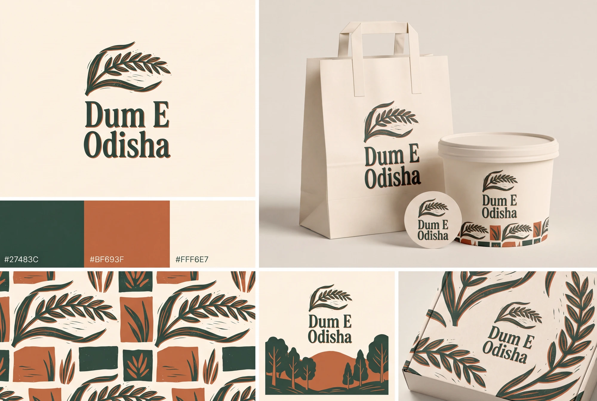

Food-brand explorations / 04
The Grain Press
An original rice-ear illustration pairs with strong editorial serif lettering. The brand feels like a small food journal printed on uncoated paper, with generous margins and botanical details.
Tactile.
quiet, generous.
The MORK chocolate packaging, Lume’s restrained colour blocks and the editorial food layouts suggest a quieter system of illustration, material and typography. No source illustration, name or layout is reused.
The quiet material-led direction feels considered, but needs disciplined contrast and sufficient illustration weight to work on a phone.

The identity, applied
A whole visual world.
Illustration and paper treatment can make the brand feel considered while the name stays straightforward.


A small system, with a clear idea
What makes it
this direction.
- Graphic device
- An original rice-ear drawing with broad ink cuts, paired with a restrained editorial grid.
- Typography behavior
- Warm condensed serif display lettering; calm sans-serif operational copy.
- Packaging direction
- Uncoated cream paper, forest ink and terracotta illustration panels.
- Draft voice example
- “Flavour in Every Layer.”
Why it belongs in this round.
The MORK chocolate packaging, Lume’s restrained colour blocks and the editorial food layouts suggest a quieter system of illustration, material and typography. No source illustration, name or layout is reused.
The full business name remains Dum E Odisha. The route name describes a creative direction, not a proposed rename. This is a distinct alternative to compare with the current and script-led ideas.
Artwork is generated raster exploration, not an approved vector master or manufactured packaging. No recipe, ingredient sourcing, founding story or customer result is implied by the visual direction. Final selection, small-size refinement and production proofing remain separate steps.